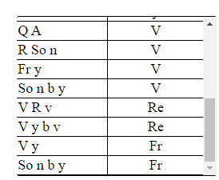

Some of the main variables that can be calculated are listed below.
Extras: critical depth, specific energy, head losses, area, wetted perimeter, mean depth, hydraulic radius, sequent depth ratio, flow regime classification, slope classification etc.
For each of those variables, there is a variety of known parameters combinations that the program supports. The combination of parameters at hand is shown the combinations table that appears below the channel shape image.
A Note on the Triangular and Trapezoidal section
For these sections, side slopes always usually needed to be specified. The specification should follow the dimensioning shown in the shape picture.
Note that if you chose to enter angles,they should be in degrees.
You can use the Tab button on your keyboard to move from one input textbox to another, insteda of using a mouse.
Before using this application with your own values, First check whether the application you received is not broken by using Test Values in CHAPTER 4 of the read me.TRY IT OUT: The discharge in a rectangular channel of width 6m , mannings n = 0.012, is 24 cubic meters per second. Find the normal depth, specify the froude number at the normal depth, specify the critical depth, and classify the flow regime using PROFLOW.
There can be a small difference in results you get but it shouldn't be large. In case you get highly contradicting results, check whether you have entered the data well, or send us feedback, in case the problem persists.
Test Values For other sections can be found in the read me file.NB: The reset button can be used to clear all inputs, and the graphical area.